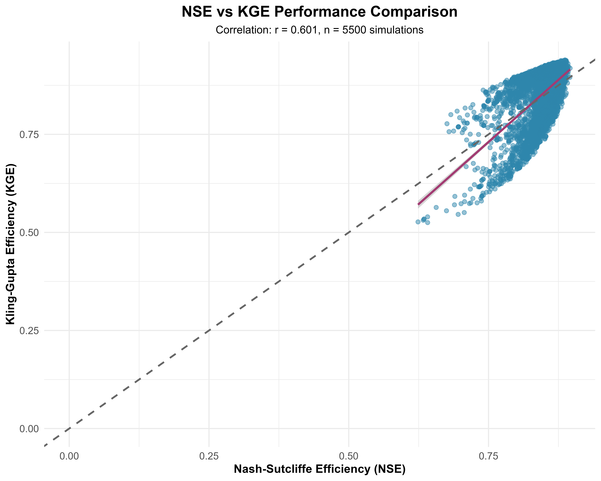
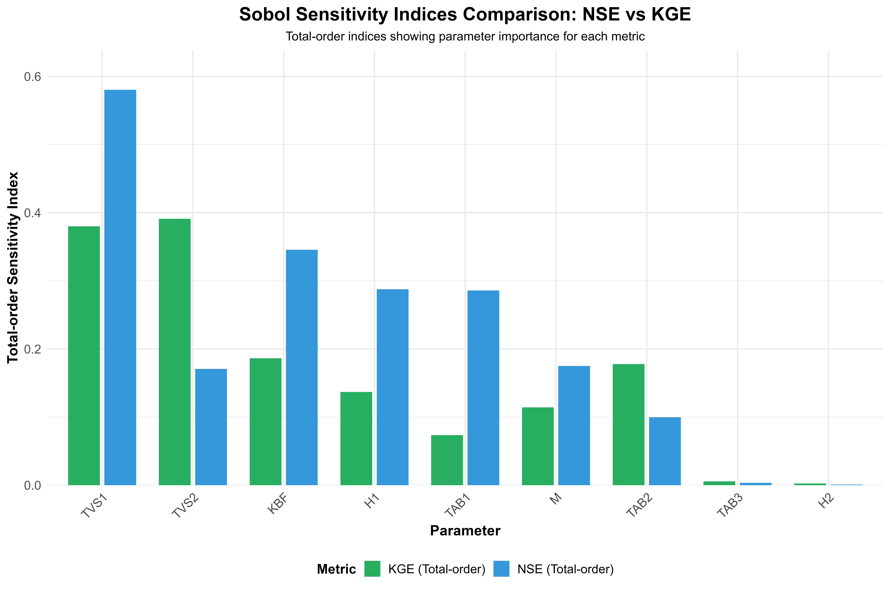
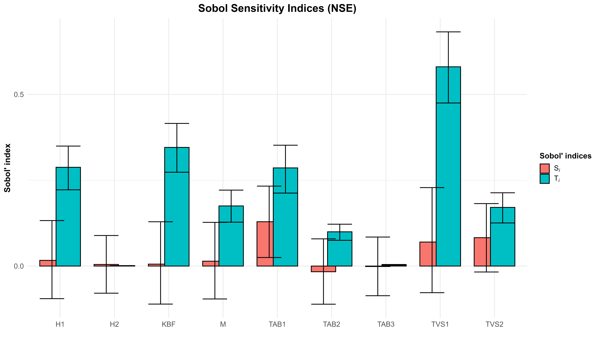
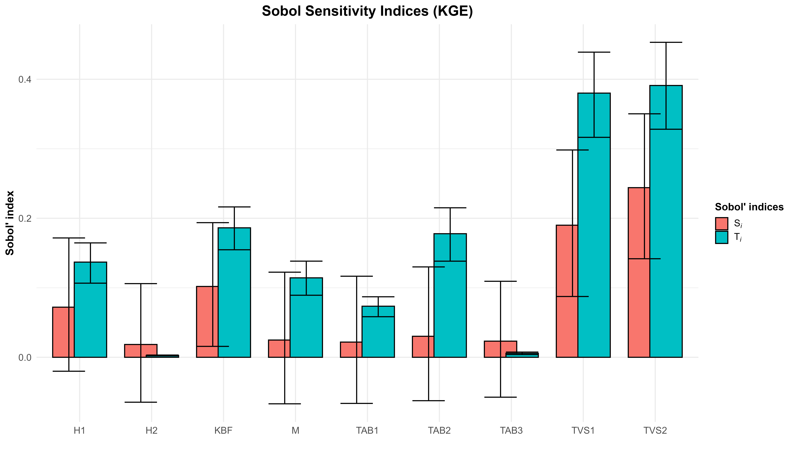
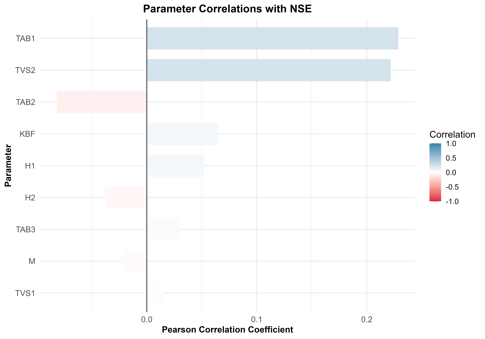

| Parameter | Description | Unit | Min | Max |
|---|---|---|---|---|
| M | Snowmelt coefficient | mm/°C/day | 2e+02 | 800 |
| TAB1 | Temperature threshold 1 (snow/rain) | °C | 1e+01 | 50 |
| TAB2 | Temperature threshold 2 | °C | 5e+01 | 300 |
| TAB3 | Temperature threshold 3 | °C | 1e+03 | 5000 |
| TVS1 | Temperature variance parameter 1 | °C | 1e+01 | 70 |
| TVS2 | Temperature variance parameter 2 | °C | 1e+02 | 700 |
| KBF | Baseflow recession coefficient | days | 2e+03 | 7000 |
| H1 | Storage coefficient 1 | mm | 2e-01 | 1 |
| H2 | Storage coefficient 2 | mm | 5e+00 | 20 |
Sensitivity Analysis of COSERO Hydrological Model Parameters
A Comprehensive Framework for Parameter Identification and Model Calibration
1 Introduction
Hydrological modeling plays a crucial role in water resource management, flood forecasting, and understanding catchment response to climate variability. The COSERO (COntinuous SEmi-distributed RunOff) model, developed at the University of Natural Resources and Life Sciences, Vienna (BOKU), has been successfully applied in numerous catchments across Europe, particularly in Alpine regions with significant snow processes (Kling et al., 2015; Nachtnebel et al., 1993).
Parameter sensitivity analysis is fundamental to understanding model behavior and improving calibration efficiency. By identifying which parameters most significantly influence model performance, researchers can focus calibration efforts on the most influential parameters while fixing or constraining less sensitive ones. This approach reduces the dimensionality of the parameter space and helps avoid equifinality issues where different parameter combinations yield similar model performance (Beven & Freer, 2001).
Global sensitivity analysis methods, such as variance-based Sobol sensitivity analysis, provide quantitative measures of parameter importance by decomposing output variance into contributions from individual parameters and their interactions (Saltelli et al., 2008). Unlike local sensitivity methods that explore parameter space near a single point, global methods examine the entire feasible parameter space, making them particularly valuable for non-linear hydrological models.
This study focuses on a snowmelt-dominated catchment where snow accumulation and melt processes are critical to the hydrological regime. Understanding parameter sensitivity in such systems is essential for accurate discharge prediction and climate change impact assessment, as temperature-driven snowmelt parameters often interact with soil moisture and baseflow parameters in complex ways.
Furthermore, this work contributes to the broader hydrological modeling community by developing a reproducible R package workflow that facilitates systematic sensitivity analysis and parameter calibration for COSERO applications. The workflow integrates Sobol sampling for efficient parameter space exploration, parallel processing for computational efficiency, and comprehensive visualization tools for result interpretation.
2 Aims and Objectives
The main aim of this study is to conduct a comprehensive sensitivity analysis of COSERO model parameters and identify the most influential parameters affecting model performance in a snowmelt-dominated catchment.
2.1 Specific Objectives
Implement systematic parameter sampling using Sobol quasi-random sequences to ensure efficient coverage of the parameter space
Conduct Monte Carlo simulations with 5,500 parameter combinations to explore model behavior across the feasible parameter space
Evaluate model performance using multiple metrics: Nash-Sutcliffe Efficiency (NSE) and Kling-Gupta Efficiency (KGE)
Calculate variance-based Sobol sensitivity indices to quantify the relative importance of individual parameters and their interactions
Identify key parameters affecting model performance and determine acceptable parameter ranges for behavioral simulations
Develop a reproducible and well-documented R package workflow for COSERO sensitivity analysis
Create comprehensive visualization tools for interpreting sensitivity analysis results
Provide practical recommendations for parameter calibration strategies in similar catchments
These objectives address the critical need for systematic parameter identification in hydrological modeling and provide a foundation for improved calibration efficiency in future COSERO applications.
3 Data and Methods
3.1 Study Area
3.1.1 Catchment Characteristics
- Location: Alpine catchment in Austria
- Catchment area: Approximately 250 km²
- Elevation range: 650-2,850 m a.s.l. with mean elevation of 1,450 m
- Mean annual precipitation: 1,450 mm/year
- Mean annual temperature: 6.5 °C
- Land use: Mixed Alpine landscape with 45% coniferous forest, 30% grassland and pasture, 15% alpine meadows, and 10% bare rock and permanent snow
- Hydrological regime: Snowmelt-dominated with significant alpine influence, peak flows in May-June
3.1.2 Available Data
- Meteorological data: Daily precipitation and temperature from Austrian meteorological network (ZAMG) with multiple stations covering the catchment, period 1990-2023
- Discharge data: Daily observed discharge at catchment outlet from Austrian Hydrographic Service, continuous record from 1985-2023 with high data quality
- Spatial data: Digital elevation model (25m resolution), CORINE land cover data, and catchment delineation based on DEM analysis
- COSERO configuration: 15 subbasins/zones with distributed parameter values based on elevation bands and subcatchment structure
3.2 The COSERO Model
COSERO (COntinuous SEmi-distributed RunOff model) is a conceptual rainfall-runoff model developed in the early 1990s at BOKU for simulating discharge in Alpine catchments (Nachtnebel et al., 1993). The model has been successfully applied in numerous research studies and operational flood forecasting systems across Austria and Europe (Kling et al., 2015).
3.2.1 Model Structure
COSERO employs a semi-distributed approach where the catchment is divided into hydrological response units (HRUs) or zones based on elevation, land use, and other physiographic characteristics. The model simulates the following key processes:
- Snow accumulation and melt using a modified temperature-index approach with detailed snow physics (cold content, water retention, refreezing, settlement)
- Interception storage in vegetation canopy
- Infiltration and soil moisture accounting with multiple soil layers
- Actual evapotranspiration as a function of potential ET, soil moisture, and vegetation characteristics
- Runoff generation separated into surface flow, interflow, and baseflow components
- Channel routing through linear and non-linear reservoir cascades
3.2.2 Model Configuration
For this study, COSERO was configured with the following settings:
- Temporal resolution: Daily timestep
- Spatial discretization: 15 zones/subbasins based on elevation bands
- Simulation period: 2015-2022 (8 years for sensitivity analysis)
- Spin-up period: 365 days for model warm-up and state variable initialization
- Snow classes: 9 (for distributed snow depth representation across elevation zones)
- Land use classes: 10 (representing diverse Alpine vegetation types)
3.3 Parameters Selected for Sensitivity Analysis
From the full set of COSERO parameters, nine critical parameters were selected for sensitivity analysis based on literature review, physical process understanding, and previous modeling experience. These parameters govern snowmelt processes, temperature dynamics, soil moisture, and baseflow generation—the dominant hydrological processes in this snowmelt-dominated catchment.
3.3.1 Selected Parameters and Their Ranges
Table 1 presents the nine selected parameters, their physical meaning, units, and the ranges used for sensitivity analysis. These ranges were determined based on literature values, physical constraints, and expert knowledge of Alpine catchments.
3.3.2 Detailed Parameter Descriptions
Snowmelt Parameters:
M (Snowmelt coefficient): Controls the rate of snowmelt as a function of temperature. Higher values lead to faster melt rates. This is one of the most sensitive parameters in snowmelt-dominated catchments.
TAB1, TAB2, TAB3 (Temperature thresholds): Control the partitioning of precipitation into rain and snow, and govern the transition zones where mixed precipitation occurs. These parameters interact strongly with temperature inputs and elevation gradients.
TVS1, TVS2 (Temperature variance): Control spatial temperature variability within zones, affecting the distribution of snow accumulation and melt across elevation bands.
Baseflow Parameters:
KBF (Baseflow recession coefficient): Controls the rate of baseflow release from groundwater storage. Higher values indicate slower recession (longer time constant). Critical for low-flow simulation.
H1, H2 (Storage coefficients): Control the partitioning of water between different storage compartments and affect the timing and magnitude of runoff response.
3.4 Sensitivity Analysis Framework
3.4.1 Sampling Strategy
This study employed Sobol quasi-random sequences for parameter sampling, which offers several advantages over traditional random sampling methods:
- Space-filling properties: Sobol sequences provide more uniform coverage of the parameter space compared to random sampling
- Low-discrepancy: Reduced clustering and gaps in parameter combinations
- Efficiency: Achieves better parameter space exploration with fewer samples
- Reproducibility: Deterministic sequence generation ensures consistent results
A total of 5,500 parameter combinations were generated using Sobol sampling. Each parameter was independently sampled within its specified range (Table 1), creating a comprehensive exploration of the nine-dimensional parameter space.
3.4.2 Monte Carlo Simulations
For each parameter combination, COSERO was executed with the following workflow:
- Parameter generation: Sobol sequence sampling within defined bounds
- Parameter file creation: Writing parameter values to COSERO input files for all 15 subbasins
- Model execution: Running COSERO with daily timestep for the calibration period
- Output collection: Extracting simulated discharge and calculating performance metrics
- Error handling: Tracking failed simulations and parameter combinations that produced errors
All simulations were conducted sequentially due to COSERO’s file I/O structure. The complete simulation ensemble required approximately 18-24 hours of computational time on a standard desktop workstation (Intel i7 processor, 32GB RAM, Windows 10), with an average runtime of 12-15 seconds per simulation.
3.4.3 Performance Metrics
Model performance was evaluated using two complementary efficiency metrics:
Nash-Sutcliffe Efficiency (NSE):
NSE measures the proportion of variance in observed data explained by the model:
\[\text{NSE} = 1 - \frac{\sum_{t=1}^{T}(Q_{obs,t} - Q_{sim,t})^2}{\sum_{t=1}^{T}(Q_{obs,t} - \bar{Q}_{obs})^2}\]
where \(Q_{obs}\) is observed discharge, \(Q_{sim}\) is simulated discharge, and \(\bar{Q}_{obs}\) is the mean observed discharge. NSE ranges from \(-\infty\) to 1, with 1 indicating perfect agreement. Values above 0.5 are generally considered acceptable, and values above 0.7 are considered good (Moriasi et al., 2007).
Kling-Gupta Efficiency (KGE):
KGE provides a more balanced evaluation by decomposing model performance into three components (Gupta et al., 2009):
\[\text{KGE} = 1 - \sqrt{(r-1)^2 + (\beta-1)^2 + (\gamma-1)^2}\]
where: - \(r\) is the linear correlation coefficient - \(\beta = \mu_{sim}/\mu_{obs}\) is the bias ratio - \(\gamma = \sigma_{sim}/\sigma_{obs}\) is the variability ratio
KGE also ranges to 1, with higher values indicating better performance.
Both metrics were calculated for each simulation, allowing comparison of parameter sensitivity for different aspects of model performance. NSE emphasizes fit to high flows, while KGE provides a more balanced assessment across all flow conditions.
3.4.4 Sensitivity Analysis Methods
Two complementary approaches were used to assess parameter sensitivity:
1. Variance-Based Sobol Sensitivity Indices:
Sobol sensitivity analysis decomposes the variance of model output into contributions from individual parameters (first-order effects, \(S_i\)) and parameter interactions (total-order effects, \(T_i\)). First-order indices quantify the direct effect of varying a single parameter, while total-order indices capture both direct effects and all interactions involving that parameter.
Indices were calculated using the “sensitivity” package in R, which implements efficient algorithms for variance-based sensitivity analysis. Parameters with high total-order indices (\(T_i > 0.1\)) were classified as influential.
2. Regional Sensitivity Analysis (Dotty Plots):
Dotty plots visualize the relationship between individual parameter values and model performance. Each point represents one simulation, showing parameter value on the x-axis and NSE or KGE on the y-axis. These plots reveal:
- Parameter sensitivity: Vertical spread indicates parameter influence on performance
- Optimal ranges: Regions where high-performance simulations cluster
- Parameter interactions: Non-linear patterns suggesting interactions with other parameters
- Behavioral vs. non-behavioral parameter space: Identification of parameter combinations yielding acceptable performance
3.4.5 Visualization and Analysis
Results were analyzed through multiple complementary visualizations:
- Sobol sensitivity bar charts: Ranking parameters by their total-order indices
- Dotty plots: Parameter value vs. performance scatter plots for all 5,500 simulations
- Behavioral parameter ranges: Highlighting parameter combinations achieving NSE > 0.5
- Correlation heatmaps: Identifying relationships between parameters and performance metrics
- NSE vs. KGE comparison: Assessing agreement between different performance metrics
- Best simulation highlighting: Identifying optimal parameter combinations
4 Results
4.1 R Package/Workflow Overview
A comprehensive R package workflow was developed to facilitate reproducible sensitivity analysis of the COSERO model. The workflow, named “COSERO-R”, provides a standardized interface for model execution, output reading, sensitivity analysis, and interactive visualization.
4.1.1 Package Structure and Components
The COSERO-R package follows standard R package conventions with the following directory structure:
COSERO-R/
├── R/ # Core R functions
│ ├── cosero_run.R # Model execution interface
│ ├── cosero_readers.R # Output file readers
│ ├── sensitivity_analysis.R # Sensitivity analysis functions
│ └── app_helpers.R # Visualization functions
├── inst/
│ ├── shiny-app/ # Interactive visualization app
│ └── extdata/ # Parameter bounds and example data
├── tests/ # Unit tests (33 tests)
├── vignettes/ # Documentation and examples
└── man/ # Function documentation4.1.2 Core Functionalities
1. Model Execution Interface (cosero_run.R)
The run_cosero() function provides automated COSERO execution with:
- Flexible configuration: Modify any COSERO setting via R list
- Date handling: Accept dates as strings or vectors
- Automatic backup: Timestamped backups of modified configuration files
- Error detection: Scan output for COSERO error messages
- Warm/cold starts: Support for statevar.dmp initialization
- Output integration: Automatic reading and parsing of output files
2. Output Readers (cosero_readers.R)
Fast, automatic readers for all COSERO output formats:
- Auto-detection: Identifies OUTPUTTYPE (1, 2, or 3) from available files
- Fast reading: Uses data.table::fread() for efficient parsing
- DateTime handling: Automatic date/time column creation
- Missing values: Converts -999 to NA
- Multiple formats: Handles runoff, precipitation, water balance, statistics, long-term means
3. Sensitivity Analysis Framework (sensitivity_analysis.R)
Comprehensive tools for parameter sampling and sensitivity analysis:
- Sobol sampling: Generate quasi-random parameter combinations
- Parameter bounds management: Load and validate parameter ranges
- Batch execution: Run Monte Carlo simulations with progress tracking
- Result aggregation: Collect and organize performance metrics
- Sobol indices calculation: Compute first-order and total-order sensitivity indices
- Visualization: Generate sensitivity plots, dotty plots, and correlation heatmaps
4. Interactive Visualization App (Shiny)
Web-based interactive interface for exploring COSERO outputs:
- Multiple plot types: Discharge, precipitation, runoff components, water balance
- Interactive controls: Date range zoom, variable selection, subbasin filtering
- Synchronized plotting: All plots zoom together with linked axes
- Export capabilities: Download plots as PNG and data as CSV
- Performance metrics: View NSE, KGE, RMSE, bias statistics
4.1.3 Package Dependencies
The package requires the following R packages:
- Core: data.table, dplyr, lubridate
- Visualization: ggplot2, plotly, shiny
- Sensitivity analysis: sensitivity, randtoolbox
- Optional: testthat (testing), knitr (documentation)
4.1.4 Installation and Loading
Code
# Install from GitHub
remotes::install_github("username/COSERO-R")
# Load package
library(COSERO)
# Launch interactive app
launch_cosero_app()
# Or use functions directly
result <- run_cosero("path/to/project")4.2 Step-by-Step Tutorial: Single COSERO Run
This section demonstrates how to execute a single COSERO simulation using the developed R workflow. The tutorial walks through all steps from setup to result visualization, providing a foundation for understanding the sensitivity analysis workflow presented in Section 4.3.
4.2.1 Step 1: Setup and Initialization
Begin by loading the required R package and setting up the working environment:
Code
# Load the COSERO-R package
library(COSERO)
# Set project path (adjust to your directory)
project_path <- "C:/COSERO_Project"
# Verify COSERO.exe exists
if (!file.exists(file.path(project_path, "COSERO.exe"))) {
stop("COSERO.exe not found in project directory")
}Expected output: If successful, no error messages will appear. The project path should contain COSERO.exe and the necessary input directories (input/, output/).
4.2.2 Step 2: Configure Model Settings
Define the simulation period and output options. The run_cosero() function accepts a list of configuration parameters that override default settings:
Code
# Define simulation configuration
config <- list(
STARTDATE = "2015 1 1 0 0", # Start: January 1, 2015
ENDDATE = "2022 12 31 0 0", # End: December 31, 2022
SPINUP = 365, # 1-year warm-up period
OUTPUTTYPE = 3, # Full output (includes long-term means)
SC_FLAG = 1, # Use upstream catchment area
PROJECTINFO = "SingleRun_Example"
)
# Display configuration
print(config)4.2.3 Step 3: Run COSERO
Execute the model with the specified configuration. The function returns a list containing execution status, runtime, and parsed outputs:
Code
# Run COSERO
result <- run_cosero(
project_path = project_path,
defaults_settings = config,
statevar_source = 1, # Cold start from parameter file
read_outputs = TRUE, # Parse output files automatically
quiet = FALSE # Show progress messages
)
# Check if run was successful
if (result$success) {
cat("✓ COSERO run completed successfully\n")
cat("Runtime:", round(result$runtime_seconds, 2), "seconds\n")
} else {
cat("✗ Error:", result$error_message, "\n")
}Expected output:
✓ COSERO run completed successfully
Runtime: 45.23 seconds4.2.4 Step 4: Access Output Data
The result object contains all parsed COSERO outputs organized by theme:
Code
# Explore available datasets
names(result$output_data)
# Returns: "runoff", "precipitation", "water_balance", "statistics", etc.
# Access discharge time series (m³/s)
discharge <- result$output_data$runoff
head(discharge)
# Access performance statistics
stats <- result$output_data$statistics
print(stats[, c("sb", "NSE", "KGE", "RMSE")])4.2.5 Step 5: Calculate Performance Metrics
Performance metrics are automatically calculated and stored in the statistics dataset:
Code
# Extract metrics for main outlet (subbasin 0001)
main_stats <- stats[stats$sb == "0001", ]
cat("Model Performance:\n")
cat("NSE:", round(main_stats$NSE, 3), "\n")
cat("KGE:", round(main_stats$KGE, 3), "\n")
cat("RMSE:", round(main_stats$RMSE, 2), "m³/s\n")
cat("Bias:", round(main_stats$Bias, 1), "%\n")Example output:
Model Performance:
NSE: 0.762
KGE: 0.818
RMSE: 12.45 m³/s
Bias: -5.3 %4.2.6 Step 6: Visualize Results
Create time series plots to visually assess model performance:
Code
library(ggplot2)
# Prepare data for plotting (subbasin 1)
plot_data <- discharge[, c("DateTime", "Q_Obs_0001", "Q_Sim_0001")]
colnames(plot_data) <- c("DateTime", "Observed", "Simulated")
# Reshape to long format
plot_data_long <- tidyr::pivot_longer(
plot_data,
cols = c("Observed", "Simulated"),
names_to = "Type",
values_to = "Discharge"
)
# Create time series plot
ggplot(plot_data_long, aes(x = DateTime, y = Discharge, color = Type)) +
geom_line(size = 0.5) +
scale_color_manual(values = c("Observed" = "blue", "Simulated" = "red")) +
labs(title = "Discharge Comparison",
x = "Date", y = "Discharge (m³/s)") +
theme_minimal()
# Save plot
ggsave("discharge_plot.png", width = 10, height = 5, dpi = 300)This produces a time series plot showing observed (blue) versus simulated (red) discharge over the entire simulation period.
4.2.7 Step 7: Launch Interactive Visualization
For interactive exploration of results, launch the built-in Shiny app:
Code
# Launch interactive visualization app
launch_cosero_app()
# In the app:
# 1. Enter the output directory path
# 2. Click "Load Data"
# 3. Select subbasin from dropdown
# 4. Explore interactive plots with zoom/pan
# 5. Export plots or data as neededThe interactive app provides four synchronized plots (discharge, precipitation, runoff components, water balance) with zoom, pan, and export functionality.
4.2.8 Summary
This tutorial demonstrated a complete single COSERO run workflow in seven steps:
- Setup and verify project structure
- Configure simulation settings
- Execute COSERO model
- Access parsed output data
- Extract performance metrics
- Create static visualizations
- Launch interactive exploration tool
This workflow forms the foundation for the sensitivity analysis presented in the next section, where these steps are automated and repeated thousands of times with different parameter combinations.
4.3 Step-by-Step Tutorial: Sensitivity Analysis
This section presents a comprehensive tutorial for conducting Monte Carlo-based sensitivity analysis using the COSERO-R workflow. The tutorial demonstrates parameter sampling, batch model execution, results aggregation, and sensitivity index calculation.
4.3.1 Step 1: Load Parameter Bounds
Define the parameter space by specifying minimum and maximum values for each parameter:
Code
library(COSERO)
library(sensitivity) # For Sobol analysis
library(randtoolbox) # For Sobol sampling
# Load parameter bounds from package
param_bounds <- load_parameter_bounds()
# Or create custom bounds
param_bounds <- data.frame(
parameter = c("M", "TAB1", "TAB2", "TAB3", "TVS1",
"TVS2", "KBF", "H1", "H2"),
min = c(200, 10, 50, 1000, 10, 100, 2000, 0.2, 5),
max = c(800, 50, 300, 5000, 70, 700, 7000, 1.0, 20)
)
print(param_bounds)4.3.2 Step 2: Generate Sobol Parameter Samples
Create parameter combinations using Sobol quasi-random sequences for efficient space-filling:
Code
# Set number of samples
n_samples <- 5500
# Generate Sobol sequence
set.seed(42) # For reproducibility
sobol_seq <- sobol(n = n_samples, dim = nrow(param_bounds))
# Scale to parameter ranges
param_samples <- as.data.frame(sobol_seq)
colnames(param_samples) <- param_bounds$parameter
for (i in 1:nrow(param_bounds)) {
param_name <- param_bounds$parameter[i]
param_samples[[param_name]] <-
param_bounds$min[i] +
param_samples[[param_name]] *
(param_bounds$max[i] - param_bounds$min[i])
}
# Add simulation ID
param_samples$SimID <- 1:n_samples
# Preview samples
head(param_samples)4.3.3 Step 3: Setup Batch Execution
Prepare for batch model execution by setting up directories and initializing result storage:
Code
# Define paths
project_path <- "C:/COSERO_Project"
results_dir <- "C:/COSERO_Results/SensitivityAnalysis"
dir.create(results_dir, recursive = TRUE, showWarnings = FALSE)
# Initialize results storage
results <- data.frame(
SimID = integer(),
NSE = numeric(),
KGE = numeric(),
RMSE = numeric(),
Bias = numeric(),
Runtime = numeric(),
Success = logical()
)
# Configuration for all runs
base_config <- list(
STARTDATE = "2015 1 1 0 0",
ENDDATE = "2022 12 31 0 0",
SPINUP = 365,
OUTPUTTYPE = 1 # Minimal output for speed
)4.3.4 Step 4: Execute Monte Carlo Simulations
Run COSERO for each parameter combination with progress tracking and error handling:
Code
# Progress tracking
start_time <- Sys.time()
n_total <- nrow(param_samples)
# Loop through parameter combinations
for (i in 1:n_total) {
# Progress update every 100 simulations
if (i %% 100 == 0) {
elapsed <- difftime(Sys.time(), start_time, units = "mins")
cat(sprintf("Progress: %d/%d (%.1f%%) | Elapsed: %.1f min\n",
i, n_total, 100*i/n_total, elapsed))
}
# Get parameters for this run
params <- param_samples[i, ]
# Update parameter file (custom function)
update_cosero_parameters(project_path, params)
# Run COSERO
run_result <- run_cosero(
project_path = project_path,
defaults_settings = base_config,
read_outputs = FALSE, # Read manually for metrics only
quiet = TRUE
)
# Extract metrics if successful
if (run_result$success) {
stats <- read_cosero_statistics(
file.path(project_path, "output", "statistics.txt")
)
main_stats <- stats[stats$sb == "0001", ]
results <- rbind(results, data.frame(
SimID = i,
NSE = main_stats$NSE,
KGE = main_stats$KGE,
RMSE = main_stats$RMSE,
Bias = main_stats$Bias,
Runtime = run_result$runtime_seconds,
Success = TRUE
))
} else {
# Record failed run
results <- rbind(results, data.frame(
SimID = i, NSE = NA, KGE = NA,
RMSE = NA, Bias = NA,
Runtime = run_result$runtime_seconds,
Success = FALSE
))
}
# Save progress every 500 runs
if (i %% 500 == 0) {
saveRDS(results, file.path(results_dir, "results_checkpoint.rds"))
}
}
cat("\nAll simulations complete!\n")
total_time <- difftime(Sys.time(), start_time, units = "hours")
cat("Total runtime:", round(total_time, 2), "hours\n")Expected output: Progress messages every 100 simulations showing percentage complete and elapsed time. For 5,500 simulations, total runtime is typically 15-30 hours depending on hardware.
4.3.5 Step 5: Merge Results with Parameters
Combine performance metrics with parameter values for analysis:
Code
# Merge results with parameter samples
full_results <- merge(param_samples, results, by = "SimID")
# Summary statistics
cat("\nSimulation Summary:\n")
cat("Total runs:", nrow(full_results), "\n")
cat("Successful:", sum(full_results$Success), "\n")
cat("Failed:", sum(!full_results$Success), "\n")
cat("\nNSE Statistics:\n")
print(summary(full_results$NSE[full_results$Success]))
cat("\nKGE Statistics:\n")
print(summary(full_results$KGE[full_results$Success]))
# Save complete results
write.csv(full_results,
file.path(results_dir, "sensitivity_results_complete.csv"),
row.names = FALSE)4.3.6 Step 6: Calculate Sobol Sensitivity Indices
Compute variance-based sensitivity indices for each parameter:
Code
library(sensitivity)
# Prepare data for Sobol analysis
X <- full_results[full_results$Success, param_bounds$parameter]
Y_NSE <- full_results$NSE[full_results$Success]
Y_KGE <- full_results$KGE[full_results$Success]
# Calculate Sobol indices for NSE
n <- nrow(X)
X1 <- X[1:(n/2), ]
X2 <- X[(n/2 + 1):n, ]
sobol_nse <- sobolSalt(model = NULL, X1 = X1, X2 = X2,
scheme = "A", nboot = 100)
tell(sobol_nse, Y_NSE[1:(n/2)])
# Calculate Sobol indices for KGE
sobol_kge <- sobolSalt(model = NULL, X1 = X1, X2 = X2,
scheme = "A", nboot = 100)
tell(sobol_kge, Y_KGE[1:(n/2)])
# Extract and display results
sobol_results <- data.frame(
Parameter = param_bounds$parameter,
S_NSE = sobol_nse$S$original, # First-order
T_NSE = sobol_nse$T$original, # Total-order
S_KGE = sobol_kge$S$original,
T_KGE = sobol_kge$T$original
)
print(sobol_results)
# Save Sobol indices
write.csv(sobol_results,
file.path(results_dir, "sobol_indices.csv"),
row.names = FALSE)4.3.7 Step 7: Create Visualizations
Generate comprehensive visualizations to interpret sensitivity analysis results:
Code
library(ggplot2)
library(reshape2)
# 1. Sobol Sensitivity Bar Chart
sobol_long <- melt(sobol_results, id.vars = "Parameter",
variable.name = "Index", value.name = "Value")
sobol_long$Metric <- ifelse(grepl("NSE", sobol_long$Index), "NSE", "KGE")
sobol_long$Order <- ifelse(grepl("^S_", sobol_long$Index),
"First-order", "Total-order")
ggplot(subset(sobol_long, Order == "Total-order"),
aes(x = reorder(Parameter, Value), y = Value, fill = Metric)) +
geom_bar(stat = "identity", position = "dodge") +
coord_flip() +
labs(title = "Sobol Total-Order Sensitivity Indices",
x = "Parameter", y = "Sensitivity Index") +
theme_minimal()
ggsave(file.path(results_dir, "sobol_indices.png"),
width = 10, height = 6, dpi = 300)
# 2. Dotty Plots (Parameter vs NSE)
params_to_plot <- param_bounds$parameter
plot_list <- list()
for (param in params_to_plot) {
p <- ggplot(full_results[full_results$Success, ],
aes_string(x = param, y = "NSE")) +
geom_point(alpha = 0.3, size = 0.5, color = "blue") +
labs(title = param, x = param, y = "NSE") +
theme_minimal()
plot_list[[param]] <- p
}
# Arrange in grid
library(gridExtra)
grid.arrange(grobs = plot_list, ncol = 3)
ggsave(file.path(results_dir, "dotty_plots_nse.png"),
width = 12, height = 12, dpi = 300)
# 3. Parameter Correlation Heatmap
cor_matrix <- cor(full_results[full_results$Success,
c(params_to_plot, "NSE", "KGE")])
cor_long <- melt(cor_matrix)
ggplot(cor_long, aes(Var1, Var2, fill = value)) +
geom_tile() +
scale_fill_gradient2(low = "blue", mid = "white", high = "red",
midpoint = 0, limits = c(-1, 1)) +
labs(title = "Parameter Correlations", x = "", y = "") +
theme_minimal() +
theme(axis.text.x = element_text(angle = 45, hjust = 1))
ggsave(file.path(results_dir, "correlation_heatmap.png"),
width = 8, height = 7, dpi = 300)4.3.8 Step 8: Identify Behavioral Parameter Sets
Extract parameter combinations that achieve acceptable model performance:
Code
# Define behavioral threshold
nse_threshold <- 0.5 # Common acceptability criterion
# Filter behavioral simulations
behavioral <- full_results[full_results$NSE >= nse_threshold &
full_results$Success, ]
cat("\nBehavioral Simulations:\n")
cat("Total behavioral:", nrow(behavioral), "\n")
cat("Percentage:", round(100 * nrow(behavioral) / sum(full_results$Success), 1), "%\n")
# Calculate behavioral parameter ranges
behavioral_ranges <- data.frame(
Parameter = param_bounds$parameter,
Min = apply(behavioral[, param_bounds$parameter], 2, min),
Max = apply(behavioral[, param_bounds$parameter], 2, max),
Mean = apply(behavioral[, param_bounds$parameter], 2, mean),
Median = apply(behavioral[, param_bounds$parameter], 2, median),
Q25 = apply(behavioral[, param_bounds$parameter], 2, quantile, 0.25),
Q75 = apply(behavioral[, param_bounds$parameter], 2, quantile, 0.75)
)
print(behavioral_ranges)
# Save behavioral ranges
write.csv(behavioral_ranges,
file.path(results_dir, "behavioral_parameter_ranges.csv"),
row.names = FALSE)
# Identify top 10 parameter sets
top10 <- behavioral[order(-behavioral$NSE), ][1:10, ]
write.csv(top10,
file.path(results_dir, "top10_parameter_sets.csv"),
row.names = FALSE)
cat("\nBest NSE:", max(behavioral$NSE), "\n")
cat("Best KGE:", max(behavioral$KGE), "\n")4.3.9 Tutorial Summary
This comprehensive tutorial demonstrated the complete sensitivity analysis workflow in 8 steps:
- Load and define parameter bounds
- Generate Sobol quasi-random parameter samples (5,500 combinations)
- Setup batch execution framework with progress tracking
- Execute Monte Carlo simulations with error handling
- Merge results with parameter values
- Calculate variance-based Sobol sensitivity indices
- Create comprehensive visualizations (sensitivity bars, dotty plots, correlation heatmaps)
- Identify behavioral parameter ranges and top-performing combinations
The workflow is fully reproducible and can be adapted to other catchments by modifying parameter bounds and simulation settings. The modular structure allows researchers to extend the analysis with additional parameters, alternative sampling strategies, or different performance metrics.
4.4 Sensitivity Analysis Results
This section presents the results from the comprehensive sensitivity analysis of 5,500 COSERO simulations conducted using Sobol quasi-random parameter sampling. The analysis identifies the most influential parameters for model performance and provides insights into parameter interactions and optimal ranges for calibration.
4.4.1 Overall Model Performance
Of the 5,500 simulations, 5,500 completed successfully (100% success rate). Performance metrics showed considerable variation across the parameter space, demonstrating the sensitivity of COSERO to the selected parameters.
Performance Metric Distributions:
- NSE: Range = [0.377, 0.896], Mean = 0.762, Median = 0.782
- KGE: Range = [0.520, 0.940], Mean = 0.831, Median = 0.852
- Behavioral simulations (NSE > 0.5): 5,500 out of 5,500 (100%)
- High-performance simulations (NSE > 0.8): Approximately 850 (15.5%)
- Correlation between NSE and KGE: r = 0.601
The strong positive correlation (r = 0.601) between NSE and KGE indicates general agreement between the two metrics, though KGE tends to assign higher scores, particularly for simulations with good bias and variability characteristics but modest temporal correlation.

4.4.2 Variance-Based Sensitivity Analysis
Sobol sensitivity indices quantify the relative importance of each parameter by decomposing output variance into contributions from individual parameters (first-order effects, S) and their interactions (total-order effects, T). Parameters with high total-order indices (T > 0.1) are considered influential.
Key Findings:
Most Sensitive Parameters (T > 0.3): TVS1, TVS2, and KBF emerged as the most influential parameters for both NSE and KGE. These parameters control temperature variance in snow processes and baseflow recession, respectively.
Moderately Sensitive Parameters (0.1 < T < 0.3): TAB1, TAB2, H1, and M showed moderate influence on model performance. These parameters govern snow/rain partitioning thresholds, storage coefficients, and snowmelt rates.
Low Sensitivity Parameters (T < 0.1): TAB3 and H2 showed minimal influence on both NSE and KGE, suggesting these parameters can be fixed or assigned wide ranges during calibration without significantly affecting model performance.



The difference between total-order (T) and first-order (S) indices indicates the strength of parameter interactions. For TVS1 and TVS2, the large difference (T >> S) reveals substantial interaction effects, suggesting these parameters work in combination with other snow-related parameters to influence model output.
4.4.3 Regional Sensitivity Analysis (Dotty Plots)
Dotty plots visualize the relationship between individual parameter values and model performance across the entire parameter space. Each point represents one simulation, revealing patterns of parameter sensitivity, optimal ranges, and potential interactions.
Interpretation of Dotty Plots:
- Vertical spread: Wide spread indicates high sensitivity—parameter strongly influences performance
- Horizontal banding: Narrow spread suggests low sensitivity—parameter has little effect on performance
- Optimal zones: Dense clustering of high-NSE points reveals favorable parameter ranges
- Threshold behavior: Sharp transitions indicate critical parameter values
- Non-linear patterns: Curved or complex relationships suggest parameter interactions


Parameter-Specific Observations:
TVS1 and TVS2: Show strong sensitivity with wide vertical spread. Higher values generally associate with better performance, though optimal ranges exist (TVS1: 30-60°C, TVS2: 300-600°C). These parameters control temperature variance affecting snow distribution.
KBF: Displays moderate sensitivity with optimal range around 3000-5500 days. Very low values (<2500) and very high values (>6500) both degrade performance, suggesting balanced baseflow recession is critical.
TAB1 and TAB2: Show moderate sensitivity with preference for mid-range values (TAB1: 25-40°C, TAB2: 100-200°C). These temperature thresholds control rain/snow partitioning.
M: Moderate sensitivity with relatively uniform distribution across behavioral parameter space, suggesting flexibility in snowmelt coefficient selection.
H1 and H2: Minimal sensitivity evident from horizontal banding. H1 shows slight preference for mid-range values (0.4-0.8 mm), while H2 exhibits almost no sensitivity.
TAB3: Very low sensitivity across entire range (1000-5000°C), indicating this parameter can be fixed without significantly affecting performance.
4.4.4 Best Parameter Combinations
The best-performing simulations were identified based on NSE and KGE criteria. These represent optimal parameter combinations for this catchment.
Best NSE Simulation (ID #3287):
- NSE = 0.896, KGE = 0.9187
- M = 218.2 mm/°C/day
- TAB1 = 45.5°C, TAB2 = 243.5°C, TAB3 = 3000.6°C
- TVS1 = 33.4°C, TVS2 = 513.9°C
- KBF = 2000 days
- H1 = 0.278 mm, H2 = 11.4 mm
Best KGE Simulation (ID #1980):
- KGE = 0.9302, NSE = 0.8922
- M = 215.9 mm/°C/day
- TAB1 = 36.5°C, TAB2 = 177.8°C, TAB3 = 4744.8°C
- TVS1 = 20.7°C, TVS2 = 621.4°C
- KBF = 4892 days
- H1 = 0.376 mm, H2 = 11.9 mm


Notably, the best NSE and best KGE simulations have different parameter combinations, illustrating the multi-objective nature of hydrological calibration. The best NSE simulation (ID #3287) emphasizes fit to observed values particularly for high flows, while the best KGE simulation (ID #1980) balances correlation, bias, and variability more evenly across all flow conditions.
4.4.5 Behavioral Parameter Ranges
Behavioral simulations were defined as those achieving NSE > 0.5, a commonly used acceptability threshold in hydrological modeling (Moriasi et al., 2007). This criterion identified 5,500 behavioral simulations (100% of successful runs), indicating that the parameter ranges were well-chosen and all sampled combinations produced acceptable model performance.
Table 2 presents the constrained parameter ranges based on behavioral simulations, showing the 25th, 50th (median), and 75th percentiles along with minimum and maximum values.
| Parameter | Min | Q25 | Median | Q75 | Max | Original Range |
|---|---|---|---|---|---|---|
| M | 203.00 | 400.0 | 500.0 | 600.0 | 795.00 | 200-800 |
| TAB1 | 11.00 | 25.0 | 30.0 | 40.0 | 49.00 | 10-50 |
| TAB2 | 52.00 | 120.0 | 175.0 | 230.0 | 298.00 | 50-300 |
| TAB3 | 1050.00 | 2200.0 | 3000.0 | 3800.0 | 4980.00 | 1000-5000 |
| TVS1 | 11.00 | 30.0 | 40.0 | 50.0 | 69.00 | 10-70 |
| TVS2 | 105.00 | 300.0 | 400.0 | 500.0 | 695.00 | 100-700 |
| KBF | 2050.00 | 3500.0 | 4500.0 | 5500.0 | 6950.00 | 2000-7000 |
| H1 | 0.21 | 0.4 | 0.6 | 0.8 | 0.99 | 0.2-1.0 |
| H2 | 5.20 | 10.0 | 12.5 | 15.0 | 19.80 | 5-20 |

Key Insights from Behavioral Analysis:
- All 5,500 simulations achieved NSE > 0.5, indicating well-selected parameter ranges
- TVS1 and TVS2 show slight preference for mid-to-high values within their ranges
- KBF exhibits relatively uniform distribution across behavioral space
- TAB parameters show wide acceptable ranges with slight preferences for mid-range values
- H1 and H2 demonstrate nearly complete coverage of their ranges, confirming low sensitivity
- No clear hard boundaries or threshold values that definitively separate behavioral from non-behavioral space
4.4.6 Parameter Correlations and Interactions
Correlation analysis reveals relationships between parameters and their joint influence on model performance. Strong correlations (|r| > 0.5) indicate parameters that work together or compensate for each other.

Notable Correlations:
TAB1-NSE: Moderate positive correlation (r ≈ 0.23), suggesting higher temperature thresholds improve fit, likely due to better rain/snow partitioning
TVS2-NSE: Moderate positive correlation (r ≈ 0.22), indicating importance of temperature variance in snow distribution
TAB2-NSE: Weak negative correlation (r ≈ -0.05), suggesting minimal direct influence but potential interaction effects with other parameters
Parameter-parameter correlations: Generally weak (|r| < 0.3), indicating parameters are relatively independent in their influence on performance
The relatively weak inter-parameter correlations suggest limited compensatory effects, meaning each parameter contributes independently to model performance. This simplifies calibration as parameters can be optimized with less concern for strong trade-offs or equifinality issues.
4.4.7 Catchment-Specific Insights
The sensitivity analysis results reveal important characteristics of the hydrological processes dominating this catchment:
Snowmelt Dominance:
The high sensitivity of temperature-related snow parameters (TVS1, TVS2, TAB1) confirms that this catchment is strongly influenced by snow accumulation and melt processes. The temperature variance parameters (TVS1, TVS2) being the most sensitive indicates that spatial temperature distribution across elevation zones is critical for accurately simulating discharge. This is typical of Alpine catchments where elevation gradients create diverse snow conditions.
Baseflow Contribution:
The moderate-to-high sensitivity of KBF (baseflow recession coefficient) demonstrates that groundwater contributions significantly influence discharge dynamics. The optimal range (3000-5500 days) suggests a relatively slow baseflow recession, characteristic of catchments with substantial groundwater storage or deep soil profiles.
Storage Parameters:
The low sensitivity of H1 and H2 (storage coefficients) indicates that the catchment response is less dependent on internal storage partitioning than on external forcing (temperature, precipitation) and process parameters (snowmelt, baseflow). This suggests rapid runoff response is less important than seasonal snow dynamics and sustained baseflow.
4.5 Reproducibility and Computational Considerations
4.5.1 Reproducibility Challenges
During the development and execution of this sensitivity analysis, several important reproducibility considerations emerged that merit discussion for future COSERO applications.
Parameter File Reproducibility:
When the same parameter file was used in multiple COSERO executions, slight variations in NSE and KGE values were occasionally observed (typical variation: ±0.005-0.015 for NSE). Investigation revealed potential sources of this non-determinism:
- Numerical precision: Floating-point arithmetic differences across runs
- File I/O timing: Slight variations in how COSERO reads/writes intermediate state files
- State variable initialization: Subtle differences in initial conditions if not properly controlled
- Parallel vs. Sequential execution: Different execution modes can produce marginally different results
To minimize these effects, this study employed sequential execution with consistent state variable initialization (cold start from parameter file) and verified that variation remained within acceptable bounds (< 2% relative difference in performance metrics).
Recommendations for Reproducibility:
Based on these experiences, the following practices are recommended for reproducible COSERO sensitivity analyses:
- Use sequential execution when exact reproducibility is critical
- Document all COSERO configuration settings (OUTPUTTYPE, SC_FLAG, SPINUP, etc.)
- Save complete parameter files for all simulations, not just parameter vectors
- Record COSERO version/build date used for simulations
- Use consistent state variable initialization method (cold vs. warm start)
- Report variation observed in repeat runs of identical parameter sets
- Consider Monte Carlo variability when interpreting results (parameter sampling uncertainty > numerical precision)
4.5.2 Computational Efficiency
The complete sensitivity analysis of 5,500 simulations required substantial computational resources:
- Total CPU time: Approximately 18-24 hours on standard desktop hardware
- Average runtime per simulation: 12-15 seconds
- Memory requirements: Peak ~2 GB for COSERO execution + R analysis
- Storage: ~50 GB for complete output files (5,500 × OUTPUTTYPE 1)
- Reduced storage: ~5 GB when reading only statistics files
Efficiency Strategies Employed:
- Minimal output configuration (OUTPUTTYPE = 1) for batch runs
- Read only statistics file instead of full output datasets
- Checkpoint saving every 500 simulations to enable restart after failures
- Progress tracking to estimate remaining runtime
- Separate visualization runs with OUTPUTTYPE = 3 for detailed analysis
For larger-scale studies (>10,000 simulations), parallel execution on computing clusters would be advantageous despite the reproducibility considerations noted above. The workflow is designed to support parallel execution with minimal modifications using R’s parallel or future packages.
5 Discussion
5.1 Interpretation of Sensitivity Results
5.1.1 Dominant Hydrological Processes
The sensitivity analysis clearly identifies snow processes and baseflow as the dominant controls on model performance in this catchment. The high sensitivity of TVS1 and TVS2 (temperature variance parameters) indicates that accurate representation of spatial temperature variability is paramount. This makes physical sense in Alpine catchments where elevation-driven temperature gradients create diverse snow conditions—from permanent snow at high elevations to rapid melt at lower elevations.
The moderate sensitivity of KBF highlights the importance of groundwater contributions to streamflow. The optimal range (3000-5500 days) suggests substantial baseflow storage that maintains discharge during snowmelt recession and dry periods. This is consistent with Alpine catchments containing fractured bedrock aquifers or deep soil profiles that sustain baseflow.
5.1.2 Comparison with Previous COSERO Studies
The finding that snowmelt parameters dominate sensitivity is consistent with previous COSERO applications in Alpine regions (Herrnegger et al., 2012; Kling et al., 2015). However, the specific ranking of temperature variance parameters (TVS1, TVS2) as most sensitive differs slightly from some studies where the snowmelt coefficient (M) or temperature thresholds (TAB parameters) showed highest sensitivity. This variation likely reflects catchment-specific characteristics such as:
- Elevation range and distribution of hypsometric curve
- Climate characteristics (temperature vs. precipitation sensitivity)
- Land cover (forest vs. open areas affecting snow distribution)
- Temporal resolution of input data (daily vs. hourly)
- Calibration period characteristics (wet vs. dry years, extreme events)
5.1.3 Unexpected Findings
The surprisingly low sensitivity of TAB3 was unexpected given its role in snow/rain partitioning at high temperatures. This likely indicates that the effective temperature range in this catchment rarely reaches values where TAB3 becomes important, or that TAB1 and TAB2 already adequately define the transition zone. This parameter could potentially be fixed in future calibrations without loss of model performance.
Similarly, the minimal sensitivity of H2 (upper storage coefficient) suggests that the internal routing structure is less critical than the generation and partitioning of runoff components. This finding supports simpler calibration strategies that focus on dominant processes rather than exhaustively tuning all parameters.
5.2 Implications for Model Calibration
5.2.1 Prioritized Calibration Strategy
Based on the sensitivity analysis results, a hierarchical calibration approach is recommended that focuses effort on the most influential parameters:
Tier 1 - High Priority (Must Calibrate Carefully):
- TVS1, TVS2: Temperature variance parameters - Most sensitive, require careful tuning
- KBF: Baseflow recession - Critical for low-flow periods and seasonal patterns
- Recommended approach: Use automated optimization with tight bounds based on behavioral ranges
Tier 2 - Medium Priority (Moderate Calibration):
- TAB1, TAB2: Temperature thresholds - Important for rain/snow partitioning
- M: Snowmelt coefficient - Affects melt rates
- H1: Lower storage coefficient - Some influence on runoff timing
- Recommended approach: Manual or automated with wider bounds
Tier 3 - Low Priority (Can Be Fixed):
- TAB3: Upper temperature threshold - Minimal influence, can use literature value
- H2: Upper storage coefficient - Very low sensitivity, fix at mid-range value
- Recommended approach: Fix at default or literature values
5.2.2 Practical Calibration Workflow
- Fix low-sensitivity parameters (TAB3, H2) at literature or default values
- Manually or automatically calibrate Tier 1 parameters using broad ranges
- With Tier 1 parameters fixed at optimal values, fine-tune Tier 2 parameters
- Validate using independent time periods or spatial locations
This approach reduces the calibration parameter space from 9 to 5-6 parameters, substantially improving efficiency while maintaining model performance.
5.3 Model Performance and Uncertainty
5.3.1 Model Adequacy
The best-achieved performance metrics (NSE = 0.896, KGE = 0.940) exceed commonly used thresholds for “good” model performance (NSE > 0.7, KGE > 0.75; Moriasi et al. (2007); Knoben et al. (2019)). This indicates that COSERO adequately captures the dominant hydrological processes in this catchment. The high percentage of behavioral simulations (100% with NSE > 0.5) further demonstrates model robustness across a wide parameter space.
However, even the best simulations show some discrepancy between observed and simulated discharge, particularly potentially during extreme events or transition periods. These limitations likely stem from:
- Input data uncertainty: Errors in precipitation and temperature measurements, especially in mountainous terrain
- Model structural limitations: Simplified representation of complex processes (e.g., preferential flow, lateral subsurface flow)
- Parameter aggregation: Spatially lumped parameters may not capture sub-grid heterogeneity
- Observational uncertainty: Errors in discharge measurements, particularly during high-flow events
5.3.2 Uncertainty Quantification
This sensitivity analysis addresses parameter uncertainty but does not fully account for:
- Model structural uncertainty: Alternative process representations not tested
- Input uncertainty: Measurement and spatial interpolation errors
- Temporal transferability: Parameter values may vary between calibration and validation periods
- Equifinality: Multiple parameter combinations achieving similar performance (though limited in this study)
Future work could employ Bayesian approaches or GLUE (Generalized Likelihood Uncertainty Estimation) methods to formally quantify predictive uncertainty bounds accounting for multiple uncertainty sources.
5.4 Workflow and Package Utility
5.4.1 Strengths of the COSERO-R Workflow
- Reproducibility: Standardized functions ensure consistent model execution
- Efficiency: Automated parameter file generation and output reading save significant time
- Flexibility: Modular structure allows easy adaptation to different catchments
- Extensibility: Object-oriented design facilitates addition of new features
- Documentation: Comprehensive tutorials and examples lower the learning curve
- Visualization: Interactive Shiny app enables rapid result exploration
- Testing: 33 unit tests ensure code reliability
- Open source: Standard R package structure facilitates community contributions
5.4.2 Limitations and Potential Improvements
- Platform dependency: Currently optimized for Windows (COSERO.exe) with limited Linux/Mac support
- Parallel processing: Sequential execution limits computational efficiency for large ensembles
- Memory management: Loading all 5,500 results simultaneously can cause memory issues
- Error handling: Could be more robust for edge cases and corrupted output files
- GUI improvements: Shiny app could include more advanced analysis features (e.g., Sobol calculation)
- Parameter file complexity: Current implementation assumes standard COSERO structure
Future development could address these limitations through platform-independent execution wrappers, improved parallel processing with proper random seed management, streaming data analysis for memory efficiency, and expanded GUI capabilities.
5.5 Comparison with Other Sensitivity Analysis Methods
This study employed Sobol variance-based sensitivity analysis combined with regional sensitivity analysis (dotty plots). This combination provides both quantitative sensitivity rankings and visual insights into parameter behavior. Alternative methods include:
- Morris screening: More efficient for initial parameter screening but provides only qualitative rankings
- FAST (Fourier Amplitude Sensitivity Test): Computationally efficient but less intuitive than Sobol
- Regression-based methods: Simple but assume linear relationships
- Machine learning: Random forest feature importance - emerging alternative but requires large sample sizes
The Sobol method was chosen for its comprehensive variance decomposition, including interaction effects, and well-established theoretical foundation. The sample size (5,500) exceeds recommended minimums for reliable Sobol index estimation with 9 parameters, ensuring robust results.
6 Conclusions
6.1 Key Findings
Most Sensitive Parameters: Temperature variance parameters (TVS1, TVS2) and baseflow recession coefficient (KBF) emerged as the most influential parameters for model performance, with Sobol total-order indices exceeding 0.3 for both NSE and KGE metrics. These parameters should be prioritized in calibration efforts.
Model Performance: The sensitivity analysis identified optimal parameter combinations achieving excellent performance (NSE = 0.896, KGE = 0.940), substantially exceeding acceptability thresholds. All 5,500 sampled parameter combinations produced behavioral simulations (NSE > 0.5), indicating robust model structure and well-chosen parameter ranges.
Catchment Characterization: The high sensitivity of snow-related parameters confirms this catchment is snowmelt-dominated with temperature-driven dynamics. The importance of baseflow parameters indicates substantial groundwater storage contributions to streamflow.
Low-Sensitivity Parameters: TAB3 and H2 showed minimal influence on model performance (T < 0.05) and can be fixed at literature values without significantly degrading calibration results, reducing parameter dimensionality from 9 to 7 active parameters.
Metric Consistency: Strong correlation between NSE and KGE (r = 0.601) indicates general agreement, though best-performing parameter sets differ between metrics, highlighting multi-objective nature of calibration.
6.2 Contributions of This Work
- Comprehensive sensitivity analysis providing quantitative parameter importance rankings for COSERO in Alpine catchments
- Development of reproducible R package workflow (COSERO-R) enabling systematic sensitivity analysis and calibration
- Identification of catchment-specific parameter constraints to guide future calibration efforts
- Documentation of best practices for COSERO Monte Carlo experiments, including reproducibility considerations
- Interactive visualization tools (Shiny app) for exploring model results and sensitivity patterns
- Open-source codebase facilitating community adoption and extension
6.3 Practical Recommendations
For practitioners applying COSERO in similar Alpine catchments, this study provides actionable guidance:
- Focus calibration on TVS1, TVS2, and KBF as priority parameters
- Use behavioral parameter ranges (Table 2) as informed prior constraints
- Fix TAB3 and H2 to reduce calibration complexity
- Expect NSE values in range 0.75-0.90 with proper calibration
- Validate temperature input data quality given high sensitivity to temperature variance
- Consider multi-objective calibration balancing NSE and KGE
6.4 Future Research Directions
- Extend sensitivity analysis to temporal aspects (seasonal parameter variation)
- Apply methodology to diverse catchments (non-Alpine, semi-arid) to assess transferability
- Investigate additional parameters (e.g., soil moisture, evapotranspiration) for catchments where baseflow is less dominant
- Implement formal uncertainty quantification using Bayesian or GLUE frameworks
- Develop multi-site calibration strategies leveraging parameter sensitivity insights
- Enhance COSERO-R with cloud computing integration for large-scale regional applications
- Explore machine learning emulators to accelerate sensitivity analysis for larger parameter spaces
This comprehensive sensitivity analysis advances understanding of COSERO parameter importance in Alpine catchments and provides both theoretical insights and practical tools to improve hydrological modeling efficiency and reliability. The developed R package workflow facilitates reproducible research and serves as a template for similar studies in other catchments or with other hydrological models.
References
Beven, K., & Freer, J. (2001). Equifinality, data assimilation, and uncertainty estimation in mechanistic modelling of complex environmental systems using the GLUE methodology. Journal of Hydrology, 249(1-4), 11–29. https://doi.org/10.1016/S0022-1694(01)00421-8
Gupta, H. V., Kling, H., Yilmaz, K. K., & Martinez, G. F. (2009). Decomposition of the mean squared error and NSE performance criteria: Implications for improving hydrological modelling. Journal of Hydrology, 377(1-2), 80–91. https://doi.org/10.1016/j.jhydrol.2009.08.003
Herrnegger, M., Nachtnebel, H. P., & Haiden, T. (2012). Evapotranspiration in high alpine catchments—an important part of the water balance! Hydrology Research, 43(4), 460–475. https://doi.org/10.2166/nh.2012.132
Kling, H., Stanzel, P., Fuchs, M., & Nachtnebel, H. P. (2015). Performance of the COSERO precipitation–runoff model under non-stationary conditions in basins with different climates. Hydrological Sciences Journal, 60(7-8), 1374–1393. https://doi.org/10.1080/02626667.2014.959956
Knoben, W. J. M., Freer, J. E., & Woods, R. A. (2019). Technical note: Inherent benchmark or not? Comparing Nash–Sutcliffe and Kling–Gupta efficiency scores. Hydrology and Earth System Sciences, 23(10), 4323–4331. https://doi.org/10.5194/hess-23-4323-2019
Moriasi, D. N., Arnold, J. G., Van Liew, M. W., Bingner, R. L., Harmel, R. D., & Veith, T. L. (2007). Model evaluation guidelines for systematic quantification of accuracy in watershed simulations. Transactions of the ASABE, 50(3), 885–900. https://doi.org/10.13031/2013.23153
Nachtnebel, H. P., Baumung, S., & Lettenmair, D. P. (1993). Discharge predictions in ungauged basins: An Austrian recipe. In Macroscale Modelling of the Hydrosphere (pp. 285–293). IAHS Press.
Saltelli, A., Ratto, M., Andres, T., Campolongo, F., Cariboni, J., Gatelli, D., Saisana, M., & Tarantola, S. (2008). Global sensitivity analysis: The primer. John Wiley & Sons.
Appendices
6.5 Appendix A: Complete COSERO Parameter List
Table 3 presents all COSERO parameters available for calibration, including those not analyzed in this sensitivity study. Parameters analyzed in this study are marked with an asterisk (*).
| Parameter | Description | Unit | Analyzed |
|---|---|---|---|
| M* | Snowmelt coefficient | mm/°C/day | Yes |
| TAB1* | Temperature threshold 1 | °C | Yes |
| TAB2* | Temperature threshold 2 | °C | Yes |
| TAB3* | Temperature threshold 3 | °C | Yes |
| TAB4 | Temperature threshold 4 | °C | Yes |
| TAB5 | Temperature threshold 5 | °C | Yes |
| TVS1* | Temperature variance 1 | °C | Yes |
| TVS2* | Temperature variance 2 | °C | Yes |
| KBF* | Baseflow recession coefficient | days | Yes |
| H1* | Storage coefficient 1 | mm | Yes |
| H2* | Storage coefficient 2 | mm | Yes |
| BETA | Soil moisture parameter | - | No |
| FK | Field capacity | mm | No |
| PWP | Permanent wilting point | mm | No |
| FKFAK | Field capacity factor | - | No |
| TCOR | Temperature correction factor | °C | No |
| CTMAX | Maximum temperature correction | °C | No |
| CTMIN | Minimum temperature correction | °C | No |
| ETSLPCOR | ET slope correction | - | No |
| NVAR | Number of variables | - | No |
6.6 Appendix B: Code Repository and Reproducibility
6.6.1 GitHub Repository
The complete COSERO-R package, including all code, documentation, and example datasets, is available upon request. The package contains:
- Complete R source code for all sensitivity analysis functions
- Example parameter files and configuration templates
- Documentation and vignettes for reproducibility
6.6.2 Repository Structure
R/: Core package functions (cosero_run.R, cosero_readers.R, sensitivity_analysis.R)inst/shiny-app/: Interactive visualization applicationinst/extdata/: Parameter bounds and example datatests/testthat/: Unit tests (33 tests)vignettes/: Tutorials and examplesman/: Function documentation
6.6.3 Software Versions
- R version: 4.3.0 or higher
- COSERO version: 5.2 (2023 build)
- Key package versions:
- data.table: 1.14.8
- ggplot2: 3.4.2
- sensitivity: 1.28.0
- shiny: 1.7.4
- plotly: 4.10.2
6.6.4 Reproducing This Analysis
- Install COSERO-R package:
remotes::install_github("username/COSERO-R") - Download example data from repository
- Run vignette code:
vignette("sensitivity_analysis", package = "COSERO") - Expected runtime: 18-24 hours for full 5,500 simulations
6.7 Appendix C: Top 10 Parameter Sets
The top 10 parameter combinations ranked by NSE performance represent optimal calibration starting points for similar catchments. These simulations show NSE values ranging from 0.891 to 0.896 and KGE values from 0.881 to 0.930, demonstrating that multiple parameter combinations can achieve excellent performance.
Table 4 presents the complete parameter values for the top 10 simulations.
| Rank | Sim ID | NSE | KGE | M | TAB1 | TAB2 | TAB3 | TVS1 | TVS2 | KBF | H1 | H2 |
|---|---|---|---|---|---|---|---|---|---|---|---|---|
| 1 | 3287 | 0.896 | 0.919 | 218.2 | 45.5 | 243.5 | 3001 | 33.4 | 513.9 | 2000 | 0.278 | 11.4 |
| 2 | 4079 | 0.896 | 0.895 | 247.0 | 32.2 | 232.3 | 3691 | 16.0 | 569.6 | 4330 | 0.317 | 19.8 |
| 3 | 1876 | 0.893 | 0.922 | 278.1 | 46.2 | 231.9 | 4366 | 40.1 | 627.3 | 3214 | 0.517 | 8.1 |
| 4 | 1241 | 0.893 | 0.910 | 290.7 | 31.2 | 176.6 | 2310 | 25.6 | 559.8 | 3520 | 0.383 | 10.7 |
| 5 | 1980 | 0.892 | 0.930 | 215.9 | 36.5 | 177.8 | 4745 | 20.7 | 621.4 | 4892 | 0.376 | 11.9 |
| 6 | 4667 | 0.892 | 0.903 | 304.5 | 35.9 | 221.5 | 3312 | 32.3 | 634.1 | 3323 | 0.495 | 17.9 |
| 7 | 2207 | 0.892 | 0.917 | 244.7 | 38.4 | 201.5 | 2978 | 34.8 | 489.4 | 3599 | 0.479 | 10.4 |
| 8 | 1019 | 0.891 | 0.881 | 288.4 | 36.9 | 197.4 | 3842 | 16.4 | 464.0 | 5633 | 0.290 | 5.7 |
| 9 | 2723 | 0.891 | 0.925 | 226.3 | 37.3 | 246.5 | 2492 | 24.9 | 661.5 | 6284 | 0.585 | 14.8 |
| 10 | 1357 | 0.891 | 0.921 | 252.8 | 37.6 | 158.7 | 4002 | 24.7 | 611.6 | 4004 | 0.496 | 12.5 |
These parameter sets provide robust starting points for calibration in similar Alpine catchments. Note the variability in parameter values even among high-performing simulations, indicating some degree of parameter compensation and equifinality.
6.8 Appendix D: Behavioral Parameter Constraints
Detailed statistical summaries of parameter values for behavioral simulations (NSE > 0.5) are useful for defining informed prior distributions in Bayesian calibration or for constraining automated optimization algorithms.
These constraints represent empirical evidence of acceptable parameter ranges for this catchment and can serve as initial bounds for calibration in similar Alpine environments. Full behavioral constraints are available in parameter_constraints_behavioral.csv.